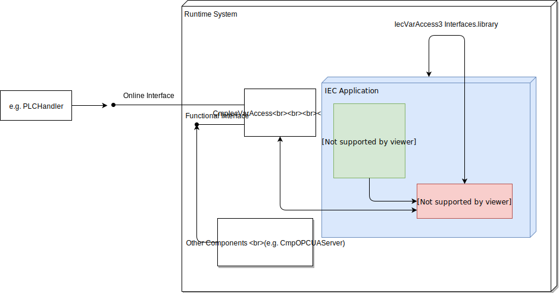

6.3.3. Symbolic IEC Variable Access¶
6.3.3.1. Introduction¶
In many systems where a controller or PLC is running, there is the requirement of accessing the variables of the IEC application. This is needed to display them in a HMI or SCADA system or to provide these variables by an OPC or OPC UA server.
The access to these variables must be always symbolic, that means via the names as they are declared in the IEC application.
6.3.3.2. Configuration of exported symbols¶
The main part is done in the CODESYS programming system using the symbol configuration editor. This editor is the main object dedicated to manage all output needed to access the symbols.
The typical way to define variables that should be exported is by adding a the ‘Symbol configuration’ as part of the application. Basically this object is used to select or exclude the symbols of the application which should be available using the IEC variable access interface. It is possible to set different access rights using this editor. Further details about the handling of this object can be found in the CODESYS Online Help, see: https://help.codesys.com/webapp/_cds_symbolconfiguration;product=codesys.
Additionally it is possible to export single variable or complete POUs or GVLs with the ‘symbol’ attribute, see: https://help.codesys.com/webapp/_cds_pragma_attribute_symbol;product=codesys.
Advanced features¶
In addition to read and write access to variable of simple datatypes, some advanced features are available:
Symbol groups¶
In some scenarios it is required that different clients can only access a specific set of symbols. This requirement can be achieved with feature of the so called “Symbol groups” in conjunction with the CmpUserMgr component.
Use the symbol configuration editor to add additional symbol sets. Each set will be added at download in the application to the CmpUserMgr. Afterwards in the symbol rights page of the device configure the access rights to the different symbols.
Extended information in the symbolconfiguration¶
Some clients of the symbolconfiguration allows to build a detailed semantic description of the application. Such a client is for example the CODESYS OPC UA server. It is possible to activate the generation of detailed information about the application.
Using this, the following features will be available:
A list of all used data types.
Information on inheritance of FBs and Interfaces
String representations of enumerations
The declaration type of a variable (VAR_INPUT, VAR_OUTPUT, etc.)
The content of pragmas. Configurable by the user.
The content of comments. Configurable by the user.
As this feature is a option of the symbolconfiguration object is only possible to define the default of this setting and allow if this option can be changed by the user. See targetsetting “symbolconfiguration/include_opcua_information”.
Calling of Functions, Methods, FBs¶
It is possible to export callable elements using the symbol configuration editor. These elements will be marked with a lightning sign inside the symbol selection. If one of these elements is selected, it will be possible to call this element using the functional interface of the IEC variable access interface.
This feature has to be enabled using the device description of the controller. By default this is deactivated. See “symbolconfiguration/allow_calls_through_opcua”.
6.3.3.3. Generated format for the symbolic information¶
The symbolconfiguration objects produces different output formats. The availability of this formats depends on different settings.
XML description file¶
When the code of the application is compiled, an XML file is generated that contains a description of the exported symbols. The name of the file contains the project and the application name (‘<Project>.<Application>.xml’).
Typically this file is used for offline configuration of an HMI or SCADA system. A typical tool that is able to parse the content is the PLCHandler. If symbol sets are enabled, XML files for each symbol set is generated.
It is possible to download the main XML file to the device, which can be uploaded and used by the PLCHandler to generate standard monitoring services to read/write the symbol values.
See the corresponding targetsettings “symbolconfiguration/generate_address_info” and “symbolconfiguration/transfer_xml” for details.
Generated code¶
The typical usecase to access the symbols is by using automatically generated code of the symbolconfiguration object. This code is linked with the application and downloaded to the controller.
It allows access to the variables using the CmpIecVarAccess interface in C or the IIecVarAccess3 Interface library in IEC code.
Behavior at Download/Online Change¶
The symbolconfiguration object takes care on changes made to application and the selection inside the symbolconfiguration editor. If anything changes the code will be updated. Depending on the changes the updated code can be transmitted via an online change or a full download of the IEC application.
Architecture¶
Main part of the symbolic IEC variable access is the resolution of variable names and paths using the generated IEC code. Typically this code is embedded into the application itself.
A special implicit GVL (GlobalVariableList) named “__Symbols” will be generated in the application. This GVL contains all the nodes needed to resolve the paths of variables. Also a list of types is added to this GVL.
Furthermore there is the possibility to add the generated code into it’s own child application. But this has only a historical relevance and is not used anymore. In this case the following architecture is downloaded to the PLC:
The internal structure is composed as a tree out of different nodes. Each node can store special information which is needed at this place. The details of that are not important here. There is a defined interface how to walk over this tree and to resolve nodes.
To speed things up every set of child is sorted when the code of the symbolconfiguration is generated. This allows a fast binary search on each layer.
Additionally to the symbolic nodes there is a list of type nodes available. This list contains the type information needed to access complex values like struture or Functionblocks.
6.3.3.4. Data Consistency¶
Data consistency is ensured only for simple data types (expect STRINGs and WSTRINGs) up to at least 4 bytes. On 64 bit systems or systems, which are able to handle 8 byte wide data types, consistency is ensured too.
Arrays and structures are read element by element. This means each element will be consistent. However, the complete array or structure is not ensured to be consistent.
This description applies only when using the generated code.
Functional interface¶
There is no additional synchronization of the access versus the IEC tasks. If there are further requirements regarding the consistency this has to be implemented by the user of the function interface. There are different ways to do that:
Implement a three way handshake using an additional handshake variable:
If all data was written set a value to state 1
The client checks for state 1. If the state switches to 1 all values are read. The PLC will not alter the values in this state.
If the client has read all data it will alter the state to 2.
The application waits for state 2. If state two is reached switch to state 0.
Synchronize the tasks using the function interface against the IEC tasks. This will lead to additional jitter of the application.
CODESYS online interface¶
When accessing the symbols using the online services of the CmpIecVarAccess there is a feature to read a variable list in a consistent way against the IEC tasks. This can be used when defining a variable list an specify it with the VLF_CONSISTENT_BACKGROUND_READ option flag at creating a variable list in the client.
6.3.3.5. Variable Access Interfaces¶
After downloading the application with the symbolic information there are different ways to access these values. It is possible to access the values using IEC code, C Runtime components or via the CODESYS communication protocol using the PLCHandler.
IEC Code interface¶
Using the IIecVarAccess3 Interfaces.library it is possible to access the symbolic information of the own or another application from within the IEC code. It is possible to browse, read, write and execute symbols. The access rights are always checked according to the settings made in the symbolconfiguration editor.
C Runtime interface¶
The exported variables can be accessed in the runtime system after downloading the applications. The access can be done with the CmpIecVarAccess component. This component provides a functional interface that can be used by other components in the runtime system.
This interface provides routines to browse, read, write and execute symbols. The access rights are checked the same ways as the IEC code does. Additionally there are interfaces to define variable lists. These lists can be read or written at once. This is useful if the client would like to read multiple values at once and the client doesn’t want to care about the values needed to access the symbols.
Online interface¶
The variable access interface can also be used online. There are several online services used to browse and access the symbols. The access rights are checked the same way as IEC code does. However, this interface lacks some features yet that are available in the IEC and C interface. These lacks will be removed in the future.
These are:
Browsing the types
Get detailed type information
Call executable symbols
6.3.3.6. Usage on Small Embedded Systems¶
As the generated code is quite large and can exceed the size of the application itself it is not possible to use this feature on small embedded systems. There are several ways to access values of these small systems.
Data Sources¶
Typically the so called Data Sources are used by the HMI to access values of other PLCs. However this object can be added to normal applications as well.
To use the data sources, an additional PLC must be available in the controller network. An the remote and data source PLCs must be configured in the same project.
Apply the following steps to use the data sources:
Configure the data sources to access the values of the small PLC
Add a symbolconfiguration object to the application that contains the data source
Export the values of the small PLC using just created symbolconfiguration
The Data Sources will use monitoring services to read and write values of the small PLC.
For further details how to configure the data sources see: https://help.codesys.com/webapp/_cds_f_datasourcesmanager;product=codesys;version=3.5.13.0
Don’t add a symbolconfiguration to the embedded PLC to achieve this behavior.
Restrictions¶
Access rights are only checked within the Data Sources application
It is not possible to call executable members
PLCHandler and Monitoring services¶
Since V3.5.14.0 of the PLCHandler it is possible to use the PLCHandler to send monitoring services to the PLC. This allows to access embedded systems using clients based on the PLCHandler. This can be HMIs or the CODESYS OPC Server. To use this feature the PLCHandler needs to know the addresses of the variables inside the areas. To get this information you need to set the targetsettings “symbolconfiguration/generate_address_info” inside the device description. There are different configurations how to use this feature (see above).
Embedded systems with file system¶
If a file system is available on the PLC it is possible to transfer the XML description file automatically to the PLC. This is useful because the file can be managed consistent to the application. This file is updated on every download or online change. The PLCHandler will try to load the XML description file from the device.
Use the targetsettings “symbolconfiguration/transfer_xml” = True and “symbolconfiguration/transfer_code” = False to achieve this behavior.
Embedded systems without file system¶
If no file system is available it is possible to configure the symbolconfiguration to generate the XML description file, but to not download the file to the PLC. If this is used the XML description file has to be copied to the PLCHandler by hand.
Use the targetsettings “symbolconfiguration/transfer_xml” = False and “symbolconfiguration/transfer_code” = False to achieve this behavior.
Restrictions¶
Access rights can not be checked
Symbol sets are not available.
It is not possible to call executable members.
Access to complex values and references not possible
6.3.3.7. Targetsettings involved¶
The symbolconfiguration can be configured in many ways. Use the following targetsettings to achieve the desired behavior.
For details on each targetsetting have a look at the documentation of these settings inside the Target-Settings documentation.
allow_calls_through_opcua¶
Setting to enable the call of executable members.
Default: Forbidden
generate_address_info¶
Setting to include the address information to the XML description file.
Default: False
generate_as_separate_application¶
Setting to generate the symbolconfiguration code into a child application
Default: False
include_opcua_information¶
Setting to add extended information to the symbolconfiguration.
Default: Allowed
max-area-size¶
Setting to define the maximum area size of the child application
Default: -1
transfer_code¶
Setting to decide if the symbolconfiguration code is generated and downloaded to the PLC.
Default: True
transfer_xml¶
Setting to decide if the symbolconfiguration XML description file is transferred to the PLC.
Default: False
transfer_xml_only¶
Setting is obsolete. Was replaced by transfer_code and transfer_xml
Default: False
6.3.3.8. Glossary¶
- CODESYS Online Help
https://help.codesys.com/webapp/_cds_obj_symbolconfiguration;product=codesys